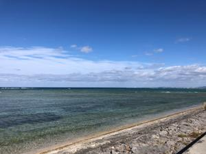

うるがいの話 ある日
最新: 大吉【うるがいの話 ある日】とは 一日だけのプログです
『うるがいの話』の最新一日だけのプログで、通信料が少なく経済的だ。カニの画像をクリックすると全ての日付が載る『うるがいの話』サイトを表示します
|
|
【うるがいの話】 うるがい(ｳﾙｶﾞｲ urugai)とは、『もずくがに』の名前でとても大きくなります。 |
|---|---|
|
|
【カミマヤーの話】 猫のことを方言でマヤーといいます。カミマヤー（kamimayaa）とは、神の猫のことです。 |
|
【タナガーの話】 たながー（ﾀﾅｶﾞｰtanagaa）とは手長えびのことで、何種類かあり大きいのは車 エビぐらいになります。 |

|
【ぶながぁの話】 ぶながー(bunagaa)とは、赤い髪の毛、赤い身体、そして身長は１ｍ２０ｃｍ ぐらい、川の蟹を食べているの目撃された。場所は沖縄県国頭郡大宜味村のと ある村僕の隣近所に住んでいる爺さんから、聞いた話です。 |
|
|
【ギーマの話】 ギーマ(giima)とは、山原の里山に咲くスズランに似た、 花を付けます。実は食べられます、 気が付くと口の周りが紫になっています。 |
2022年01月22日 (土）大吉
17:44

識名宮でおみくじを引いた。ニコ『大吉』だった、車のフロントに貼り付ける
安全祈願と破魔矢を買って来いと言われ、昨日の夕方ジョギンギの途中で買う
ことにしたお釣りがあったので、ついでにおみくじを引いた。識名宮の周辺で
小学生の女の子たちが、遊んでいた。私が神社に入ろうとすると、建物の影か
ら女の子が私に『わっ！』と言って驚かせた。女の子は逆にビックリしたが常
に鍛えている老人には全然響かないのである。 おっと、昨日の続きを
８．３ ショイクを検知してみよう
東京の研修で事業継続計画（ＢＣＢ）の投資効果を求めるため、費用の計算を
しなければならないが、電卓を持っていなかった私は、講師がタブレットの電
卓アプリを使って、と借りる。ところが縦で使うと電卓がおかしい？、これは
横にするといいよと言われ横にする、すると電卓の画面が横になった。おーこ
れって何！、内心驚くカルチャーショックを受けた瞬間だった。あれから１０
年以上経ってアンドロイドアプリのスタディで理屈が理解できた。
子供が家に来た、傷病手当金は、減額されず４カ月分遡って給付されたとのこ
と。このお金は子供がそのまま貯金していいと言うので、了解する。貰えなか
った人達もいるかもしれないので大事に使うようにと言う。ＳＬａｃｋって分
かると尋ねると、普通に使っていたよと軽く返事をした、ホー。
昨日、パルコシティの近く 自動車専用道路 を小型バイクで走る。橋に向かっ
て走らすと『バイクなどは通行できない』とあるではないか、ただし気づいて
バイクを路肩に止めた所は自動車専用道路を２０メートルも侵入している。引
き返すこともできず、そのまま自動車専用道路を走り抜けた。気持ちよかった
１７時３７分 ビットコインの総資産 ￥１１、７８４↓ おー